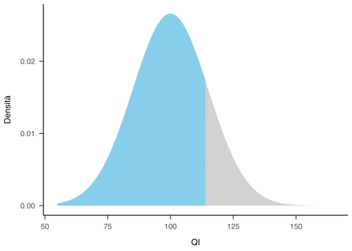
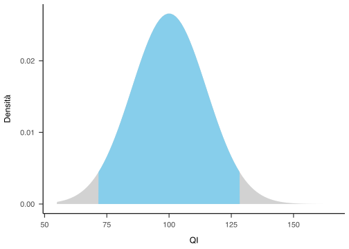

library("tidyverse", warn.conflicts = FALSE)
library("gghighlight")Per iniziare, carichiamo i pacchetti necessari.
1 Funzione gaussiana
Una funzione gaussiana è una funzione della seguente forma: \[ f(x) = \frac{1}{\sigma\sqrt{2\pi}} \exp\left( -\frac{1}{2}\left(\frac{x-\mu}{\sigma}\right)^{\!2}\,\right) \] laddove \(\mu\) e \(\sigma\) sono i paramemtri della distribuzione.
In R la formula diventa:
L’area è unitaria, per qualsiasi valore \(\mu\) e \(\sigma\):
area <- integrate(
gauss,
mu = 100,
sigma = 15,
lower = -Inf,
upper = Inf)$value
area[1] 1area <- integrate(
gauss,
mu = 0,
sigma = 1,
lower = -Inf,
upper = Inf)$value
area[1] 1Il fatto che la distribuzione gaussiana dipende dai parametri \(\mu\) e \(\sigma\) significa che, al variare dei parametri, varia la forma della curva di densità: la variazione di \(\mu\) trasla la curva di densità in maniera rigida sull’asse \(\mathbb{R}\); la variazione di \(\sigma\) allarga o appiattisce la curva di densità.
Disegnamo la funzione di densità usando, come parametri, \(\mu\) = 100 e \(\sigma\) = 15 – ovvero, specifichiamo la distribuzione del QI.
mu <- 100
sigma <- 15
x <- seq(55, 145, length.out = 1e3)
plot(x, gauss(x, mu, sigma), type = 'l', ylab = "Densità")Lo stesso risultato si ottene con
1.1 La funzione di ripartizione
1.2 Quantili e densità
Definiamo i seguenti quantili e calcoliamo la densità corrispondente per il caso della normale standardizzata:
quants <- c(-1.96, 0, 1.96)
gauss(quants, 0, 1)[1] 0.05844094 0.39894228 0.05844094Lo stesso risultato si ottene con
dnorm(quants, 0, 1)[1] 0.05844094 0.39894228 0.058440942 La probabilità
Calcoliamo ora le probabilità, ovvero le aree. Iniziamo con la probabilità \(P(X < 115)\) per il QI.
df <- data.frame(x = seq(55, 165, length.out = 100)) %>%
mutate(y = dnorm(x, mean=100, sd=15))
ggplot(df, aes(x, y)) +
geom_area(fill = "sky blue") +
gghighlight(x < 115) +
labs(
x = "QI",
y = "Densità"
) +
papaja::theme_apa()
Il risultato cercato è
integrate(
gauss,
mu = 100,
sigma = 15,
lower = -Inf,
upper = 115)0.8413447 with absolute error < 3.8e-06ovvero
pnorm(115, 100, 15)[1] 0.8413447Consideriamo ora l’area sottesa alla funzione di densità nell’intervallo \(\mu \pm 1.96 \sigma\).
df <- data.frame(x = seq(55, 165, length.out = 100)) %>%
mutate(y = dnorm(x, mean=100, sd=15))
ggplot(df, aes(x, y)) +
geom_area(fill = "sky blue") +
gghighlight(x > 100 - 1.96*15 & x < 100 + 1.96*15) +
labs(
x = "QI",
y = "Densità"
) +
papaja::theme_apa()
La probabilità cercata è
integrate(
gauss,
mu = 100,
sigma = 15,
lower = 100 - 1.96*15,
upper = 100 + 1.96*15)0.9500042 with absolute error < 1e-11ovvero
3 Il valore atteso
Il valore atteso di una variabile aleatoria continua \(X\) è \[ \mathbb{E}(X) = \mu_X = \int xf_X(x)dx. \]
Per calcolare il valore numerico dell’integrale con R definiamo la seguente funzione:
g <- function(x) x * gauss(x, 100, 15)Possiamo ora usare integrate() per trovare la soluzione che cerchiamo:
EX <- integrate(
g,
lower = -Inf,
upper = Inf
)$value
EX[1] 1004 La varianza
La varianza di una variabile aleatoria continua \(X\) è \[
var(X) = \mu_X = \int (x - \mu)^2f_X(x)dx.
\] In R definiamo la seguente funzione
h <- function(x) x^2 * gauss(x, 100, 15)e poi calcoliamo l’integrale
5 L’interpretazione dei parametri
In conclusione, la distribuzione gaussiana dipende da due parametri: \(\mu\) e \(\sigma^2\). Tali parametri corrispondono al valore atteso (cioè alla media) e alla varianza (cioè alla dispersione dei valori attorno al massimo della curva) della distribuzione.